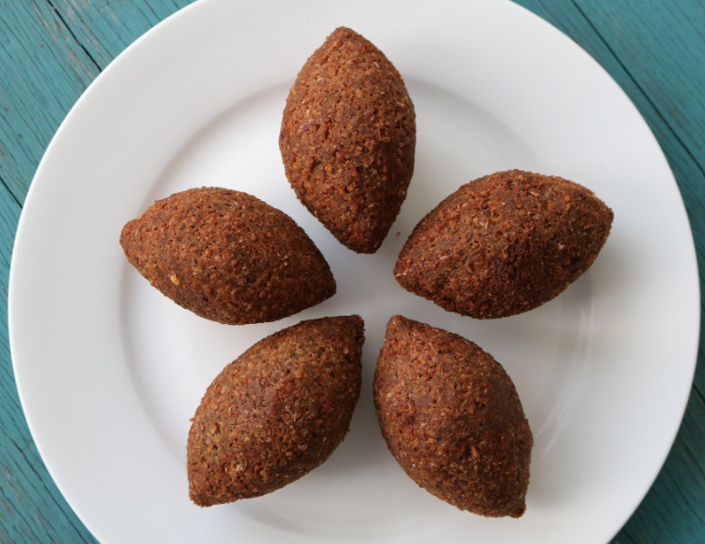
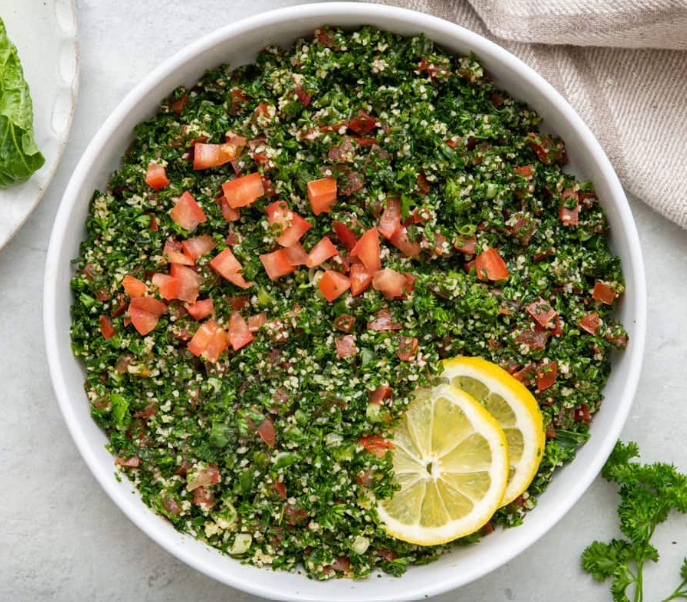
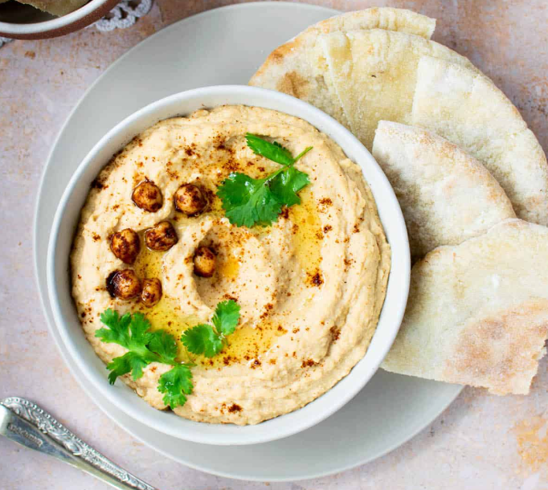
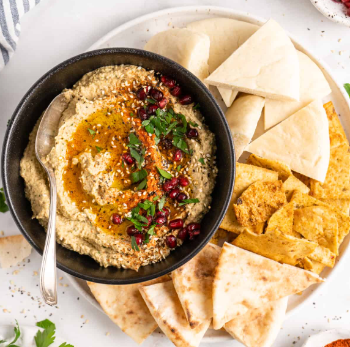
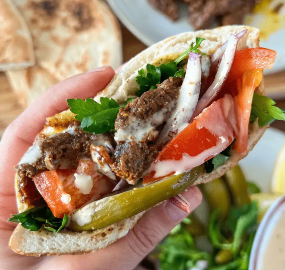
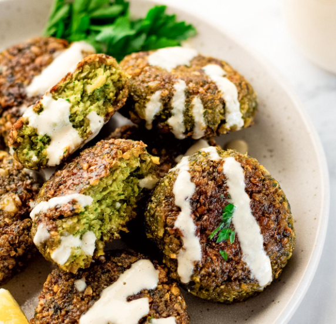
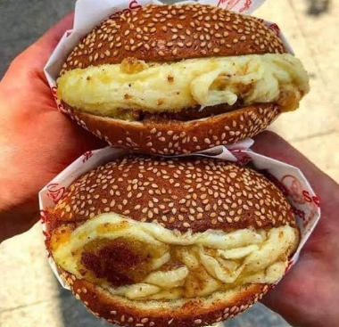

MEALS
-
Kibbeh

Kibbeh is basically Lebanon's holy grail comfort food. It's a spiced mix of ground meat and bulgur wheat, usually shaped into little fried torpedoes stuffed with warm beef or lamb, onions, and pine nuts. You'll also see it baked in a pan like a savory pie or even eaten completely raw like a Lebanese tartar.
-
Tabouleh

Tabouleh is all about fresh parsley. It's a herb salad, not a grain dish, loaded with finely chopped flat-leaf parsley, mint, tomatoes, and a tiny sprinkle of fine bulgur. It's tossed in plenty of olive oil and fresh lemon juice, giving it that super bright, tangy kick that's beloved by all Lebanese poeple.
DIPS
-
Hummus

Lebanese hummus is ultra-creamy, whipped from chickpeas, with tahini, garlic, and freshly squeezed lemon juice, and mixed until completely smooth. It's served spread in a shallow bowl with a deep well in the center, swirled with good olive oil and eaten by scooping it up with warm pita bread.
-
Baba Ghanoush

A classic Levantine dip made primarily from roasted eggplants, tahini, garlic, lemon juice, and olive oil. Its signature feature is a rich, smoky flavor achieved by charring the eggplants over an open flame or broiling them until the skin is blistered and the flesh turns tender.
STREET FOOD
-
Shawarma

Shawarma is a Middle Eastern street food staple made from thin cuts of spiced meat—chicken, beef, or lamb—stacked on a vertical rotisserie. As the meat turns and roasts, the outer edge crisps up and is shaved off into wraps
-
Falafel

Falafel is a classic Middle Eastern street food consisting of deep-fried balls or patties made from ground legumes blended with fresh herbs and warm spices. It boasts a dark, ultra-crispy crust on the outside and a light, fluffy, vibrant green interior.
MORNING FOOD
-
Knafeh

Knafeh is an iconic Levantine dessert made with a base of melted, stretchy cheese, topped with a buttery, crispy crust of semolina dough, and soaked in aromatic sugar syrup infused with orange blossom or rose water.
-
Mana'ish

Mana'ish (singular, man'osheh) is the ultimate Lebanese breakfast street food: a warm, flat dough pressed with toppings and baked fresh in a blistering-hot oven. The classic version features za'atar mixed with olive oil, but it's just as common to get it topped with salty Akkawi cheese, or spiced minced meat.